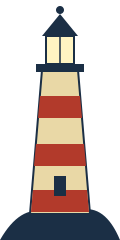

Surveyed by Krishiv Ahuja, autumn 2026
The map is larger than your screen. Scroll in every direction. Hover over anything that looks faded.

Population: 4,812 and rising.
Has sunk more code than any storm.
Six shores, perfectly stable. Electrons wander freely.
Visible only at low tide. Reset required.
If you found this, you scrolled further than most.
The treasure is buried west of Benzene Atoll. Look for the X.
Day 41. Still haven't found the end of this webpage.
Whoever drew this map forgot to save their work twice.
12 14 19 23
31 40 58
7 5 3 1
Here be dragons Here be one very shy sea serpent
~~~ o ~~~~ ~~~ ~~
You weren't supposed to find me.

Keeper's note: the light is on. Nobody has visited since 2009.
Infinite Loop Lagoon
while (true) { swim(); }
Ran aground at 11:58pm. All hands survived. One assignment did not.
[ a locked chest ] Inside: one extension request, never sent.
X
Treasure: 100 points.
Redeemable before 11:59pm.
Depth: unknown. Every question sent down here gets marked as a duplicate.
● An anglerfish glows in the dark: "Have you tried turning it off and on again?"
Day 1. Set sail from index.html. Morale high.
Day 3. Lost the stylesheet. Found it in a folder called css.
Day 12. Spotted a sea serpent. Pretended I didn't.
Day 40. Typed position: absolute so many times I dream in pixels.
Day 41. The rest of this page has been torn out.
The lighthouse keeper isn't lonely. The keeper is a cat.
Don't swim in the lagoon. Some of us have been circling it for weeks.